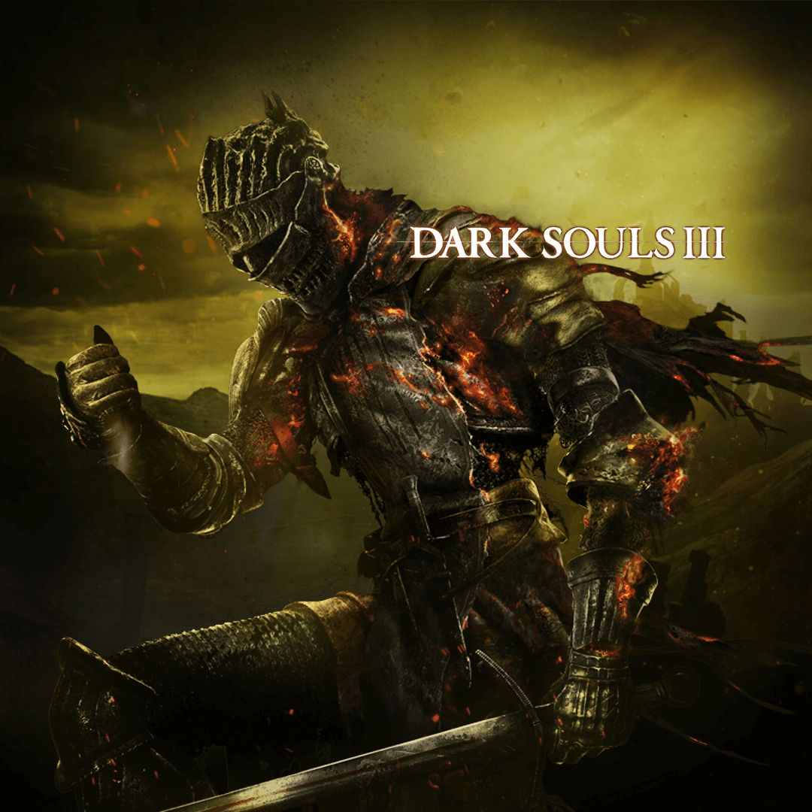
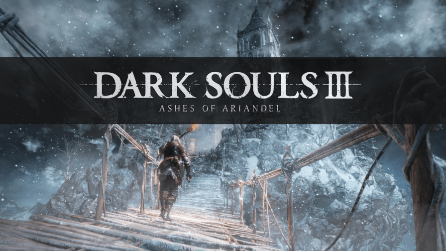
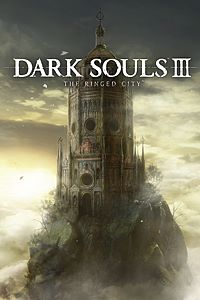

|
||||||||||||||||
|---|---|---|---|---|---|---|---|---|---|---|---|---|---|---|---|---|
|
|
||||||||||||||||
|
Set in the Kingdom of Lothric, a bell has rung to signal that the First Flame, responsible for maintaining the Age of Fire, is dying out. As has happened many times before, the coming of the Age of Dark produces the undead: cursed beings that rise up after death. The Age of Fire can be prolonged with the linking of the fire, a ritual in which great lords and heroes sacrifice their souls to rekindle the First Flame. However, Prince Lothric, the chosen linker for this age, has abandoned his duty and instead chooses to watch the flame die from afar. The bell is the last hope for the Age of Fire, resurrecting previous Lords of Cinder (heroes who linked the flame in past ages) to attempt to link the fire again; however, all but one Lord shirk their duty.
The Ashen One, an Undead who failed to become a Lord of Cinder and thus called an Unkindled, rises and must link the fire by returning Prince Lothric and the defiant Lords of Cinder to their thrones in Firelink Shrine. The Lords include the Abyss Watchers, a legion of warriors sworn to protect the land from the Abyss and linked by a single soul; Yhorm the Giant, who was once a conqueror of the very people for whom he then sacrificed his life; and Aldrich, who became a Lord of Cinder despite his ravenous appetite for both men and gods. Lothric himself was raised in order to link the First Flame, but rejected his destiny and chose to watch the fire fade. Once the Ashen One succeeds in returning Lothric and the Lords of Cinder to their thrones, they travel to the ruins of the Kiln of the First Flame. There, they encounter the Soul of Cinder, an amalgamation of all the previous Lords of Cinder who had linked the flame in the past. Once the Soul of Cinder is defeated, four endings are made possible based on the player's actions during the game. The player can attempt to link the fire, summon the Fire Keeper to extinguish the flame and begin an age of Dark, or kill her. A fourth ending consists of the Ashen One taking the flame for their own and becoming the Dark Lord of Londor. |
 | |||||||||||||||
Ashes of AriandelAshes of Ariandel introduces a new area, the Painted World of Ariandel. On arriving at a location in the base game, the Ashen One meets a wandering knight, Gael, who implores them to enter the Painted World and fulfill a prophecy to bring "Fire for Ariandel." Inhabitants of this world variously beg the Ashen One to burn the Painted World per the prophecy or leave it to its slow rot. A painter girl tells the Ashen One of "Uncle Gael"'s promise to find her dyes to paint a new world. The player's decision to proceed elicits first coldness from the world's self-appointed guardian and then a boss fight, in which Ariandel is ultimately set on fire. The painter thanks the player for showing her flame and paints her new world.In keeping with previous franchise DLC, Ashes of Ariandel introduces not only a substantial new area, with two boss fights, but also several new weapons, spells and pieces of armour. |  |
The Ringed CityMain article: Dark Souls III: The Ringed City In The Ringed City, the Ashen One begins their journey to an area known as "The Dreg Heap", a region where ruined kingdoms of different eras are piled upon each other as the world draws to a close. From the Dreg Heap, after battling through the ruins of Lothric Castle, the Ashen One encounters the amnesiac knight Lapp, who cannot remember his past. The Ashen One traverses the Earthen Peak, an area encountered in Dark Souls II, before fighting a boss known as the Demon Prince. Victorious, the player travels to the Ringed City, an ancient city of the Pygmies, the ancestors of humanity, which has fallen into the Abyss. After defeating the guardian of the Church of Filianore, the player's actions transport them to a ruined wasteland of ash, ostensibly in the world's future. There, the Ashen One meets a disheveled Gael, from Ashes of Ariandel, who has begun killing and looking for the souls and blood of the Pygmies for the painter girl to use as ink. He has been fully corrupted by the Dark Soul and demands the Ashen One's portion of it. He is finally struck down, allowing the Ashen One to obtain his blood and the Dark Soul. |
 | |||||||||||||